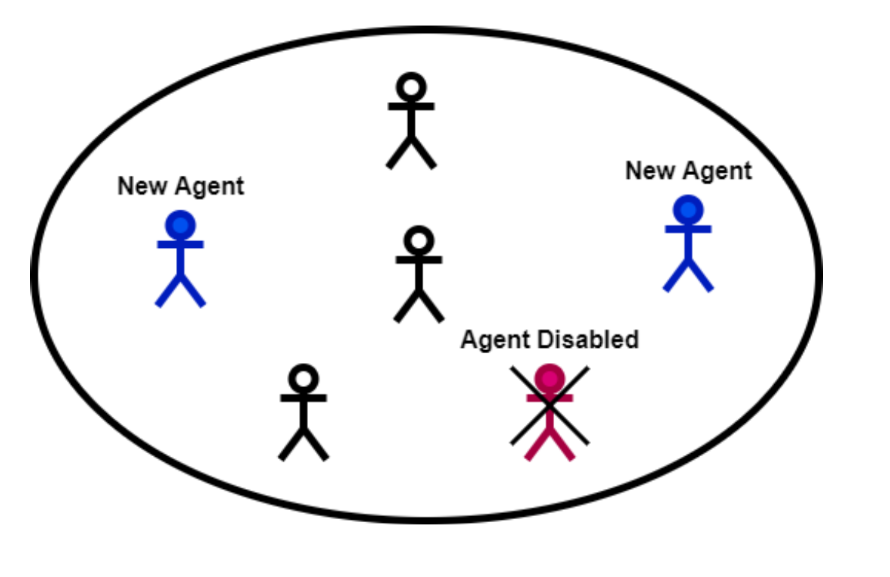

Multi-agent Reinforcement Learning (MARL) problems often
require cooperation among agents in order to solve a task. Centralization
and decentralization are two approaches used for cooperation in MARL.
While fully decentralized methods are prone to converge to suboptimal
solutions due to partial observability and nonstationarity, the methods
involving centralization suffer from scalability limitations and lazy agent
problem. Centralized training decentralized execution paradigm brings out
the best of these two approaches; however, centralized training still has
an upper limit of scalability not only for acquired coordination performance
but also for model size and training time. In this work, we adopt the
centralized training with decentralized execution paradigm and investigate
the generalization and transfer capacity of the trained models across variable
number of agents. This capacity is assessed by training variable number of
agents in a specific MARL problem and then performing greedy evaluations with
variable number of agents for each training configuration. Thus, we analyze
the evaluation performance for each combination of agent count for training
versus evaluation. We perform experimental evaluations on predator prey and
traffic junction environments and demonstrate that it is possible to obtain
similar or higher evaluation performance by training with less agents.
We conclude that optimal number of agents to perform training may differ
from the target number of agents and argue that transfer across large
number of agents can be a more efficient solution to scaling up than directly
increasing number of agents during training.

|
|
|
{kind=link}